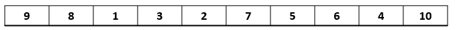
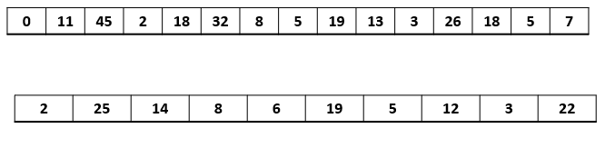
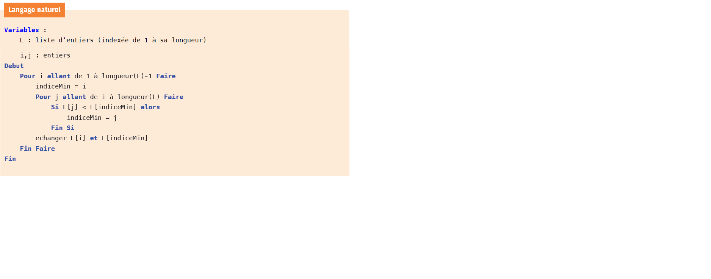
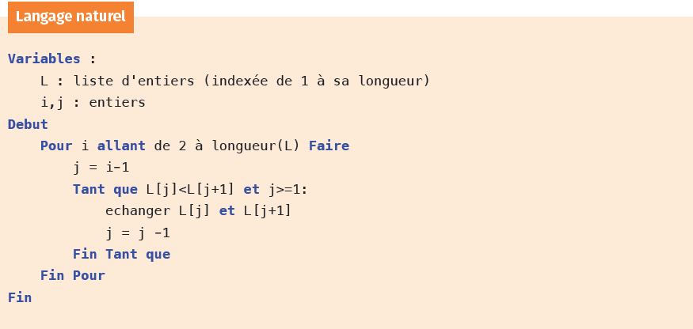
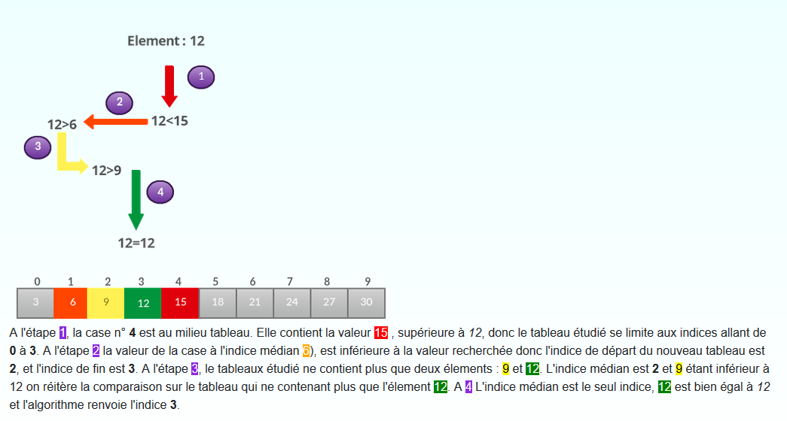
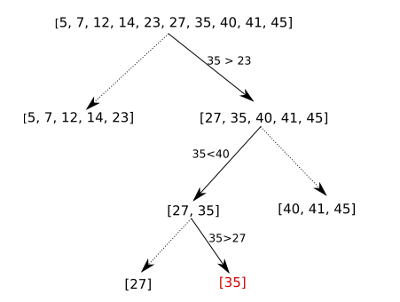
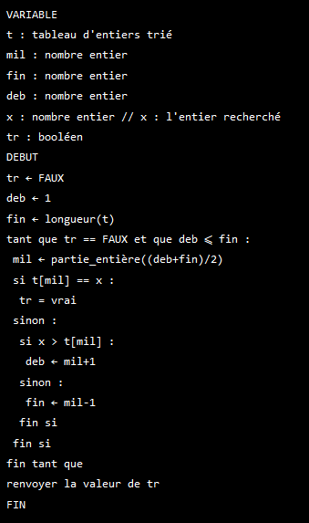

Algorithmes de tris⚓︎
Dis moi comment tu tries...⚓︎
Trier un tableau
Trier le tableau donné dans l'ordre croissant et érire l'algorithme utilisé sur le tableau blanc.  Une fois l'algorithme rédigé, l'essayer sur ces tableaux : 
Découvrir les tris⚓︎
Tris par sélection⚓︎
Une petite vidéo pour comprendre
L'algorithme de tri par sélection : 
On trouve le plus petit élément de la liste puis on le place en premier. On recommence en partant du 2ème élément : on trouve le minimum de la liste restante et on le place en 2ème,et ainsi de suite.
Tri par insertion⚓︎
Une petite vidéo pour comprendre
L'algorithme de tri par insertion : 
C’est le tri qu’on utilise quand on range des cartes : On parcourt la liste à trier du début à la fin. Au moment où l’on considère le ième élément,les i−1 premiers sont déjà triés, et on insère ce ième élément à la bonne place parmi les i−1 En pratique, on fait «remonter» ce ième élément en l’échangeant avec son prédécesseur tant qu’il est plus grand que lui.
Question
Un de ces tris correspond-il à celui que vous avez utilisé?
Dérouler l'algorithme
En partant des tableaux ci-dessous, écrire la modification du tableau à chaque étape de chaque tri.
Selection :t = [5, 4, 3, 2, 1]
Insertion : t = [12, 8, 23, 10, 15]
Implémenter les tris⚓︎
Compléter la fonction tri_selection(L) qui prend en paramètre un tableau L et le trie par ordre croissant.
1 2 3 4 5 | |
Compléter la fonction tri_insertion(L) qui prend en paramètre un tableau L et le trie par ordre croissant.
1 2 3 4 5 | |
Ajouter les tests unitaires das les deux fonctions pour trier :
[2,5,4,3,0,8]
[21,15,44,13,30,84]
[9,8,7,5,5,4,3,2]
Modifier les fonctions précédentes de façon à ce que la fonction renvoie le tableau trié mais aussi le nombre d'étapes.
Une étape c'est une inversion ou une comparaison.
Afficher le nombre d'étapes maximales (c'est-à-dire dans le pire des cas) pour un tableau de taille 10, 50 et 100.
NB : le pire des cas, ici, est un tableau trié dans l'ordre décroissant.
Recherche dicothomique⚓︎
La recherche d'un élément dans un tableau peut se faire par dichotomie. La condition d'utilisation de cette recherche est que le tableau soit déjà trié. Elle consiste à comparer la valeur recherchée à la valeur du ilieu de la liste. Si la valeur recherchée est inférieure à la moitié, on fait la meme recherche avec le demi tableau inférieur, etc ...
exemple 1:

exemple2:

Algorithme : 
Implémenter l'algorithme précédent et faites le test avec :
t = [5, 7, 12, 14, 23, 27, 35, 40, 41, 45] et x = 9
puis avec des valeurs figurant dans le tableau.
Création MB. (ré)utilisation et modification libre mais non commerciale CC-BY-NC